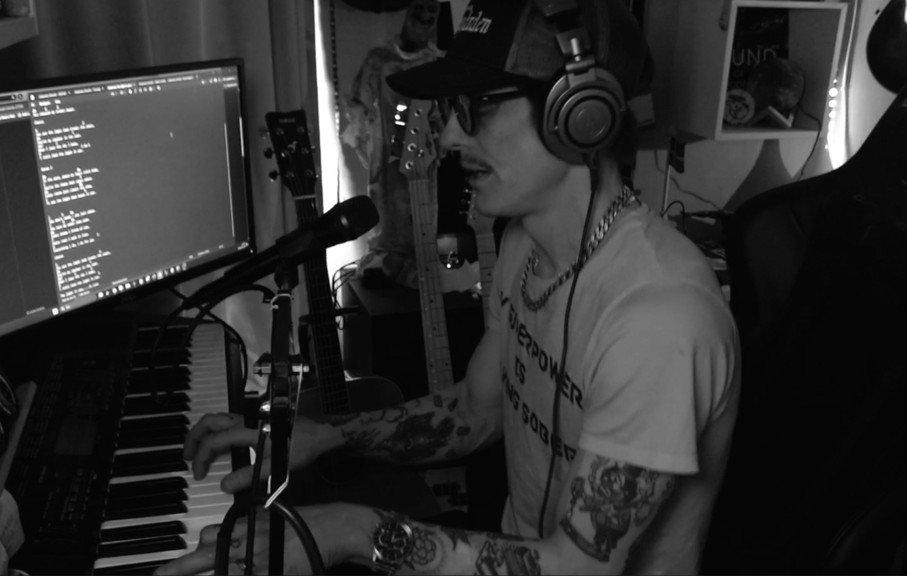

The voice came first
I sang whenever I could: at school, at children's events, in musicals. If there was a lead role, I usually wanted to try for it.
SONGWRITER · PIANIST · NORTHERN SWEDEN
Some things are easier to sing than to say.
THE PERSON BEHIND THE PIANO

I'm Johannes, a songwriter and musician from Boden in northern Sweden. I write in Swedish and English, usually starting with a feeling I can't quite put into words.
Sometimes it's a quiet piano. Sometimes a song grows into something bigger. Love, loss, doubt, hope — and all the messy things in between.
I don't have all the answers. I just make music, share it, and hope someone out there recognizes a little of themselves in it.
HOW IT ALL BEGAN
I grew up without musicians in the family. I dreamed about being the electric guitarist with the long solos, but it was singing that caught me. And it's been with me ever since.
I sang whenever I could: at school, at children's events, in musicals. If there was a lead role, I usually wanted to try for it.
I wrote what I believe was my first song when I was about fourteen. It was the start of finding my own words.
There was a brief attempt at playing in a band. It didn't last long, and most of my musical path has been my own.
I started sharing music on Twitch. What began as live music also became a community for conversation, humour and being yourself.
My Twitch community bought me a piano. I began learning by listening and experimenting, without reading sheet music or knowing much music theory. Piano became part of my own songs.
THE PEOPLE WHO MADE A DIFFERENCE
I don't think my community will ever fully understand how much they mean to me.
And I'm not sure I'll ever find the right words to explain it either.
When I started streaming, I never imagined that a group of people, many of whom I'd never even met in person, would become such an important part of my life.
They came for the music, I suppose. But somewhere along the way, they became so much more than people watching a stream.
They became friends. People I looked forward to seeing. People who made me laugh, who listened, who cared and who somehow made me feel that I had a place where I belonged.
And then they gave me a piano.
I still struggle to explain what that meant to me.
I hadn't grown up playing piano. I couldn't read sheet music, and I didn't really know what I was doing. To be fair, there are still plenty of days when I don't.
But I started playing.
And something happened.
I found a kind of peace sitting behind those keys that I hadn't really experienced before.
I could sit there for hours, trying things, making mistakes, discovering sounds and slowly learning how to turn what I felt into something I could actually hear.
Nobody was telling me how it was supposed to sound. Nobody was telling me I was doing it wrong.
I was allowed to learn in my own way, at my own pace.
And the strange thing was that people actually wanted to listen.
That might sound like such a small thing, but for someone who has spent so much of his life questioning whether he's good enough, it really isn't.
My community has given me encouragement when I doubted myself. They've shown appreciation for things I was ready to dismiss as not good enough. They've listened to songs I was almost too afraid to share.
And sometimes they've believed in me a lot more than I've believed in myself.
I don't want to make it sound like every stream is wonderful or that sitting down at the piano suddenly makes everything in life easier.
It doesn't.
I still doubt myself. I still get frustrated. I still have days when I wonder what the hell I'm doing.
But I keep coming back to those keys.
Because somewhere between the mistakes, the melodies and the people listening, I've found something I didn't know I was looking for.
Safety. Friendship. Love. Appreciation.
And the freedom to keep growing without having to prove that I'm already good enough.
That piano has given me a way to develop as a musician, but my community has given me something just as important.
The courage to believe that maybe what I do is enough.
Not because it's perfect.
But because it's mine.
And if you're one of the people who have been part of that journey, whether you've been there for years or only stopped by for a single stream, I hope you know that you've made a difference.
A much bigger difference than you probably realise.
Thank you for giving me a place where I don't have to be anyone other than Johannes.
ORIGINAL MUSIC
OFFICIAL RELEASES · SPOTIFY
My released catalogue currently has two singles: Imaginary Love (2022), a professionally recorded studio release, and The Light In You (Raw Acoustic), released on 3 May 2026. Everything else here is an original song, a demo, a work in progress or a cover, not an official release.
Listen to the official releases on Spotify ↗The official 2026 Raw Acoustic single, written for Linda.
About the weight of holding everything together — and the need to be allowed to fall.
An original song from Johannes's growing collection of personal music.
One of the earlier original songs in the journey.
Original songs, drafts and works in progress from different chapters of my life. Not all are official releases.
Some songs are best left as titles, at least for now.
More songs, demos and live recordings will be added here. Release status is shown only where confirmed.
BEHIND THE SONGS
Inspired by my wife and best friend, Linda. It's about someone who sees something good in you when you struggle to see it yourself. A personal song, recorded simply at home, with the imperfections left in.
I've talked openly about mental health on my streams. But talking about struggling isn't quite the same as letting people see it. This song is about being tired, scared, and not always having it together. No pretending. Just Johannes.
THE MUSIC / THE ARCHIVE
Releases, songs I'm still working on, and the stories behind them. If a recording is available here, press play. Otherwise, follow the link to listen elsewhere.
Audio will play here once you add your own MP3 files to the audio folder.
BEHIND THE SONGS / IN MY OWN WORDS
Not every song needs an explanation. But these are a few things I want you to know about the ones I've written.
I wrote this song a few years before it was released, drawing on parts of my own history with addiction. It's a song I wrote to myself. Some things are easier to put into music than to say out loud.
It was professionally recorded and released in 2022. That recording is already out in the world, and it belongs to its own chapter of my life.
I wrote this for Linda, my wife. It's personal in a way that's hard to explain. Sometimes singing something to a room full of people is easier than singing it directly to the person it was written for.
Some songs leave you feeling a little exposed.
This one is written to myself. I know how to keep going, to keep things moving and make it look like I've got it under control. But sometimes I don't.
I wanted to write something that gave me permission to be scared, to be imperfect, and to fall without having to explain it away.
This song is simply about loving where I'm from. The land, the people, the feeling of being home. There isn't a secret meaning hidden between the lines.
Sometimes a song can just be about what it says.
Everyone has a She. It might be a woman, a man, a dog, a place, or someone you miss. For me, She is Linda. But when you listen, I don't want you to think about my She. I want you to think about yours.
These stories are separate. Every song has its own reason for existing.
WATCH & LISTEN / JOHANNES WINROTH
Some songs are recordings. Others are moments caught live, with the wrong notes, the unexpected turns and everything that makes music human. These are a few videos from my YouTube channel.


Videos load from YouTube only when you press play. Some videos may not allow playback on external websites; use the YouTube link below each video if that happens.
Explore my YouTube channel ↗COMMUNITY / YOUR WORDS
I know who I think I am. I'm curious about who I am to you. Share a memory, a thought, or a few honest words. Messages are reviewed before appearing publicly.
Only approved public messages appear here. Nothing is automatically published.
Loading messages…
HELP MAKE THE MUSIC REAL
One line. One supporter. One step closer to a studio recording. Every song has its own 12,000 SEK goal. Adoption is symbolic and does not transfer any rights to the music.
Payments and line reservations are not active yet. No money is collected on this page. The progress bars will only reflect verified payments when the secure checkout is connected.
Imaginary Love is already professionally recorded and is not part of this fundraiser. The list of songs awaiting new studio recordings can be adjusted before launch.
LIVE WITH JOHANNES
Music, piano, guitar, loops and conversations that rarely go exactly as planned.
Open Twitch ↗Missed a stream? Start with a performance on YouTube.
What Could Have Been ↗The live indicator here does not claim to detect whether the channel is currently broadcasting.
DEMOS / IDEAS / WORK IN PROGRESS
Not everything needs to be polished. Some songs are still looking for their shape. This is where I'll put the sketches, the first takes, and the pieces that haven't found their time yet.
WORK IN PROGRESS
A song still taking shape. A demo can be added here when I'm ready to share it.
No recording uploaded yet.
OPEN NOTEBOOK
Unfinished verses, piano sketches and ideas that may become songs someday. Or may stay exactly as they are.
New sketches can be added without changing the design.
WINROTHMUSIC
Since 2022, Twitch has been a place for live piano, guitar, looping, conversation, humour and a community where it's okay to be yourself. Sometimes the best moments are the ones nobody planned.
Visit Twitch ↗FROM YOUTUBE
A personal performance from my YouTube channel. Watch the full video here.
YouTube ↗“Be afraid and
do it anyway.”
STAY CONNECTED
Follow the music, watch a stream, or get in touch through one of my channels.